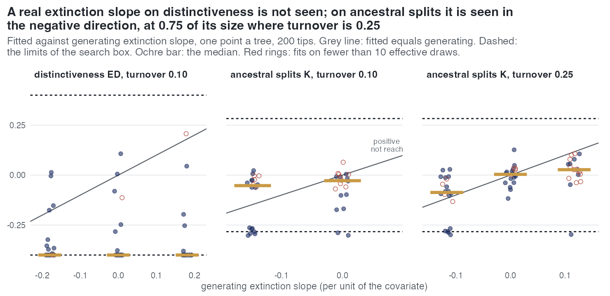
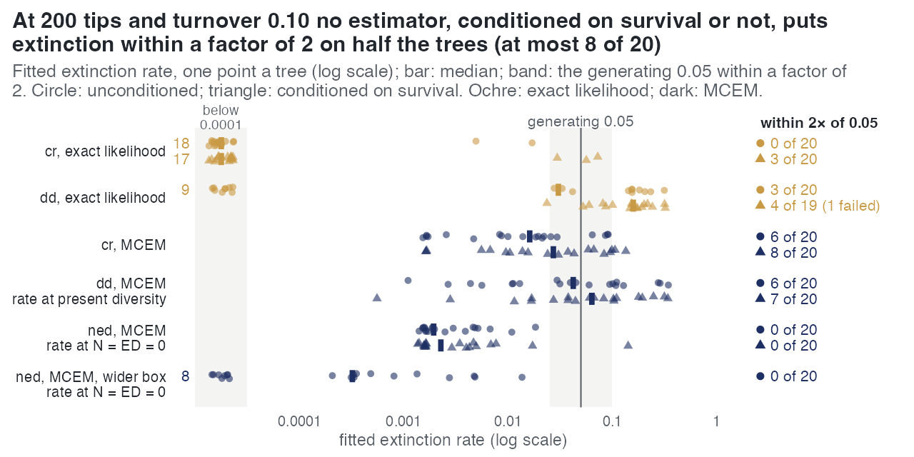

E32 — the extinction side at 200 tips: a wider box, a generator with a driver, the exact estimators
| Status | complete |
| Package build | emphasis f30a791 |
| Driver / analysis | sim/E27-conditions.R (--widen-ext, --gamma-eff); sim/E32-exact.R; sim/E32-analysis.R |
| Data | results/E32/wide-pairs.csv (20 rows), results/E32/arms.csv (6 rows), results/E32/exact.csv (40 rows); macros report/e32-numbers.tex, table report/e32-table.tex |
Question
E29 put the fitted extinction rate and its slopes on the limits of the search box at 200 tips, on finished fits as on the others. Two readings fit that: the box is too tight for a maximum that lies just outside it, or the tree does not bound extinction from below and the estimate goes wherever the box ends. And every generator so far had extinction slopes of zero, so nothing said whether a slope that exists is found. E32 tests both readings and adds an estimator with no augmentation.
Design
Common to all three parts: 200 tips, turnover 0.10, complete sampling, crown age 15, exponential link, unconditional likelihood, 300 draws, max_iter 300, ladder restricted to cr, dd and the generator's model.
Amendment, 2026-10-07, before any fit was read: the clock is 16 hours a fit, not four, because E31's four-hour clock (24 workers on 16 cores) cut lineage-level fits to a quarter of their iterations. The two K-arm fits that had finished under the four-hour clock were discarded.
(a) A wider box. E29's 20 ned trees refitted with the lower limits of the three extinction parameters moved outward: the intercept by 3 on the log-rate (a floor \(e^{-3}\) lower), each slope to twice its lower limit. Upper limits and the speciation side as auto_bounds() gives them.
(b) A driver. Generators with an extinction slope on their own covariate, the intercept moved so that a lineage at the covariate's mean keeps the rate 0.05, the capacity recalibrated per arm:
| arm | generator | extinction slope | box limit of that slope |
|---|---|---|---|
| ED + / - | ned |
\(\pm\log 2\) per mean ED = ±0.181 per unit | 0.40 |
| ED 0 | E29's fits | 0 | 0.40 |
| K + / 0 / - | nk |
\(\pm\log 1.5\) per SD of K = ±0.147 per split (0 in the zero arm) | 0.28 |
20 trees an arm. The generating slope sits at about half the box limit, so a fit on the limit is not within a quarter of it.
(c) The exact estimators. DDD::bd_ML (constant rates) and DDD::dd_ML (linear diversity dependence, constant extinction), both conditioned on survival of the crown (cond = 1), on E29's 20 ned trees and E27's 20 null (dd-generated) trees at 200 tips. Neither is the generating model of the ned trees.
Pre-set rule
- Wide box, per extinction parameter, over the trees whose E29 fit had it on its lower limit: follows the box if on at least half the wide fit lies beyond the old limit by more than half the added width; stays if on at most a quarter. A median log-likelihood gain over E29 below 1 is reported as a flat likelihood. Follows and flat: "the tree does not bound extinction from below at this size, and the extinction side is reported as not identified whatever the box".
- Driver, per covariate. Recovered: in both nonzero arms median fitted/generating in [0.75, 1.25], right sign on ≥ 80%, fewer than half the fits on a limit. Detected in sign only: right sign on ≥ 80% in both arms and the + and - interquartile ranges disjoint. Not identified otherwise, in particular if the three arms' medians are not ordered -, 0, +.
- An arm whose generator fit has fewer than 10 effective draws on more than half its trees is sampler-limited and left out of (2); an arm whose generator does not reach 200 tips within 15% is reported and not fitted.
- Exact: no threshold; the shares within a factor of 2 of 0.05 and below 0.005, per estimator and tree set, beside E29's MCEM
crandddfits.
Results
(a) The estimates follow the box.
| parameter | on the lower limit in E29 | wide fit beyond the old limit by > half the added width |
|---|---|---|
| rate at the origin | 7 | 7 |
| slope on N | 6 | 5 |
| slope on ED | 13 | 10 |
The slope on ED has a median of -0.763 against a new limit of -0.80 (E29: -0.400 against -0.400); the rate a median of 0.00032, 156 times below 0.05 (E29: 0.0019). The log-likelihood gains a median 0.01 (quartiles -0.02 to 0.02) over E29's fit of the same tree. 7 of 20 fits finished, none below 10 effective draws; \(\beta_{ED}\) returns at 0.71; ned chosen within 2 AIC on 4, cr on 10.
(b) A driver (arms.csv):
| arm | trees | generating slope | fitted slope, median (quartiles) | fitted/gen | right sign | on a limit | ESS median (< 10) | finished | generator chosen | \(\beta\) ratio |
|---|---|---|---|---|---|---|---|---|---|---|
| ED + | 20 | +0.181 | -0.400 (-0.400, -0.395) | -2.21 | 2 | 15 | 283 (1) | 8 | 5 | 0.78 |
| ED 0 (E29) | 20 | 0 | -0.400 (-0.400, -0.274) | — | — | 13 | 247 (1) | 7 | 4 | 0.71 |
| ED - | 20 | -0.181 | -0.400 (-0.400, -0.346) | 2.21 | 19 | 11 | 235 (1) | 6 | 2 | 0.74 |
| K + | 0 | +0.147 | not reachable: the clade passes the lineage cap at every capacity searched | |||||||
| K 0 | 20 | 0 | -0.028 (-0.099, -0.005) | — | — | 2 | 10.5 (9) | 2 | 19 | 0.65 |
| K - | 20 | -0.147 | -0.053 (-0.268, -0.025) | 0.36 | 18 | 7 | 20.2 (5) | 7 | 20 | 0.56 |
Neither K arm is sampler-limited by rule (3) (9 and 5 of 20 below 10 draws), though the zero arm's median of 10.5 is at the threshold. In arms.csv the column mu0_gen is the intercept at covariate zero after centring (0.025, 0.05, 0.10 for the ED arms; 0.214 for K -), not 0.05.

(c) The exact estimators (exact.csv):
| estimator, trees | median \(\mu\) | within 2x of 0.05 | below 0.005 |
|---|---|---|---|
bd_ML, ned trees |
0.0000 | 3 of 20 | 17 |
bd_ML, null trees |
0.0000 | 0 of 20 | 20 |
dd_ML, ned trees |
0.1575 | 4 of 20 | 1 |
dd_ML, null trees |
0.1220 | 4 of 20 | 1 |
MCEM cr (E29), ned trees |
0.0161 | 6 | 6 |
MCEM dd (E29) at present diversity, ned trees |
0.042 | 6 | — |
bd_ML puts extinction at zero on 37 of 40 trees; the three exceptions are ned trees k02 (0.072), k11 (0.030) and k13 (0.056). dd_ML puts it at 3.2 and 2.4 times the generating value; on ned tree k02 it did not converge (dd_conv = 1, 54,548 s). dd_ML keeps extinction constant, while the MCEM dd fit lets it vary with N, so the two dd rows are not the same quantity.

ned fit (bottom row) moves further down.Conclusion
Not identified, by all three readings. (a) Follows and flat on all three parameters: the estimate goes where the box ends and the likelihood changes by 0.01 on the way, so the tree does not bound extinction from below at 200 tips and turnover 0.10. (b) The ED slope is not identified: the fit returns the lower limit whatever the generating slope, and the arms' medians are not ordered. The K slope is not identified by the rule because the positive arm is not reachable; the two arms that exist are ordered and show a negative slope recovered in sign at about a third of its size, with overlapping quartile ranges. (c) An exact likelihood with no augmentation puts extinction at zero on 37 of 40 trees, so the result is of the trees, not of MCEM. What E32 does not vary is turnover or size; E38 maps those with the exact likelihood, and E35 moves the K arms to turnover 0.25.